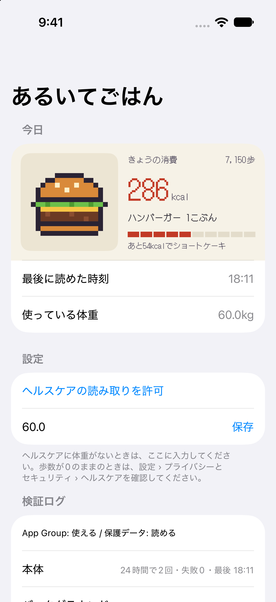
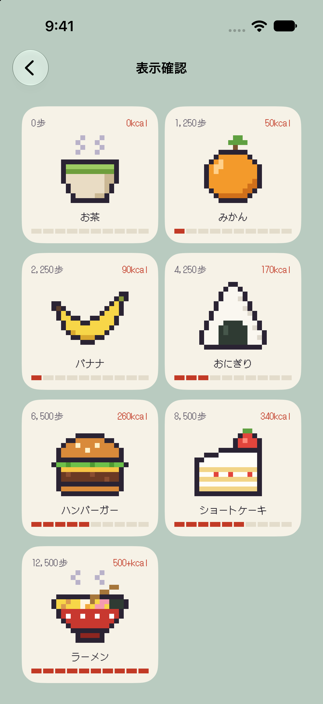
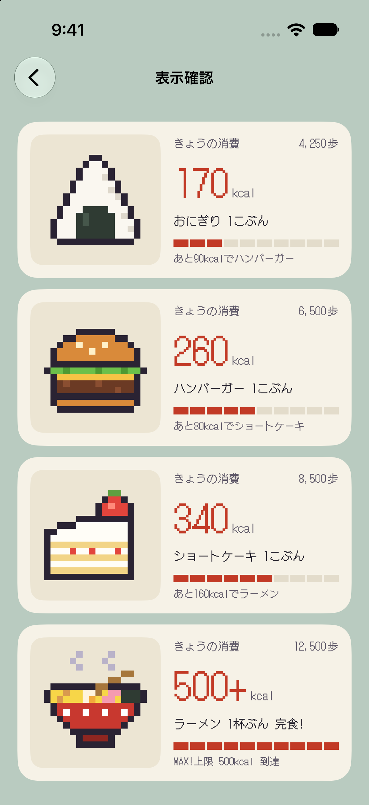
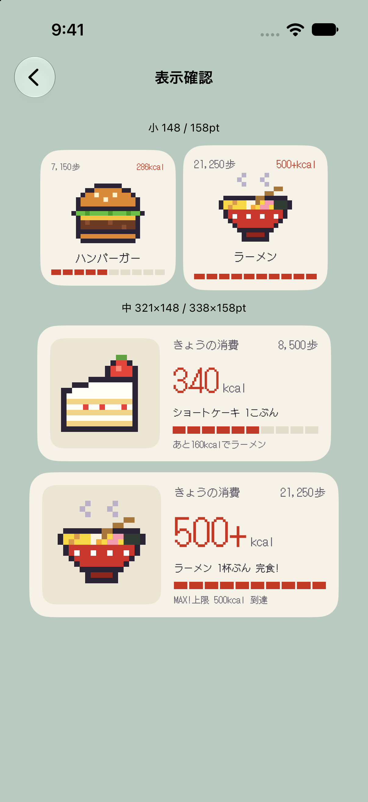
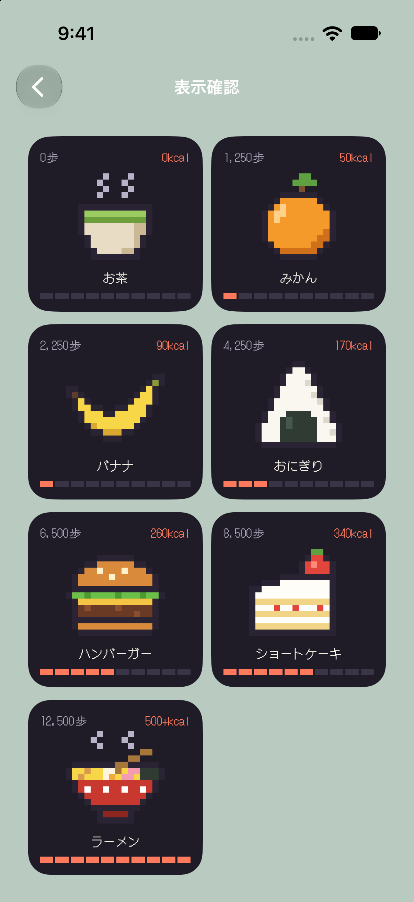

あるいてごはん 試作の結果
最終更新 2026-11-03 18:35頃。進捗のページを別タブで開く ↗。
シミュレータで確認できる範囲は確認した。HealthKitの実データとホーム画面に置いた動作は、実機が必要で未確認。
ビルドとテスト
Xcode 27.0、iPhone 17 シミュレータ（iOS 27.0）。
| 確認したこと | 結果 | 根拠・メモ |
|---|---|---|
| 単体テスト | OK | 17件すべて成功 |
| Release構成の実機向けビルド | OK | 署名なしでコンパイルのみ。署名は未確認 |
| 拡張の同梱とフォント、画像 | OK | appex、ttf、Assets.car が本体と拡張の両方にある |
| エンタイトルメント | OK | HealthKit、Background Delivery（本体のみ）、App Groupがシミュレータ向けの埋め込みにある |
| ウィジェットの登録 | OK | pluginkit に jp.renokazaki.aruitegohan.widget が出る |
| コンパイラの警告 | 残あり | 並行処理の警告が3種類（Swift 6では問題になる）。ビルドは通る。シミュレータ専用コードの警告がもう1種類ある |
| TestFlightへのアップロード | OK | Upload succeeded（build/testflight-2/export.log）。App Store Connectでビルド0.1 (2) が「テスト中」、グループ「内部テスト」に割り当て済み |
シミュレータでの表示
ウィジェットの表示部品を本体の確認画面に置いて確認した。ホーム画面には置いていない。歩数は疑似値で、体重は60kg。
| 確認したこと | 結果 | 根拠・メモ |
|---|---|---|
| ティア7種の切り替え | OK | 閾値ちょうどの歩数で確認 |
| 500kcalで「500+」、ゲージ満タン | OK | |
| 狭いサイズで崩れない | OK | 148、158ptの小、321×148、338×158ptの中 |
| ダークモードの輪郭 | 要判断 | ドット絵の濃い輪郭が背景に溶ける。ごはんの形は読める |
| kcalの文字間 | 要判断 | DotGothic16の半角で「kca l」のように l の前後が空いて見える |





実機での確認（未実施）
| 確認したこと | 結果 | 根拠・メモ |
|---|---|---|
| 半日歩いたときの更新の遅れ | 未確認 | |
| ロック中と解除後の動き | 未確認 | |
| 拡張からHealthKitを読めるか | 未確認 | |
| Background Deliveryの頻度 | 未確認 | |
| 0時をまたいだときの表示 | 未確認 | |
| 係数0.04の感覚 | 未確認 | |
| 大きな文字サイズ | 未確認 | |
| iOS 27の読み取り権限の選択の影響 | 未確認 | |
| ホーム画面の色合いモードでの見え方 | 未確認 |